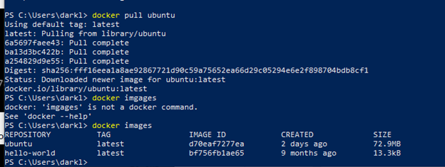
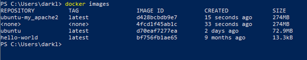

Tutorial
In this tutorial we'll learn how to create a Docker repository, store an image with your own website stored in it, and served using apache. Follow the following steps:
Step 1
-Install Docker from
here, once installed open docker and run the command
"docker run hello-world"
Step 2
-Pull an Ubuntu image from Dockerhub. After completing step one run the following command in your command line
"docker pull ubuntu", then use the command
"docker images to check the existing images on your computer.

Step 3
-How to commit changes to a docker images. Run the following commands:
"docker run -it ubuntu:latest /bin/bash, then install applications in this container with the following command:
"apt-get update". Install apache2 using
"apt-get install apache2", once is apache is installed install vim text editor using the following command
"apt-get install vim". Exit the Ubuntu container with the
"exit" command. Check the container using
"docker ps -a" and create a new Docker image using the following command:
"docker commit (your root id from the container that we were on) ubuntu-my_apache2(this is the name of the file)". Check to make sure your image is there
"docker images"

Step 4
-How to share data between Docker container and host. Use the following command
"docker run -it -p 127.0.0.1:80:80 -v (the folder where you have your docker files)"
Step 5
-Vi editor in unix. Check the preset working directory using
"pwd", then use the following command
"cd /var/www/html". Once you are in that directory crease an index.html file using the command
"vi index.html", press the key
"i" on your keyboard to edit your new index.html file. If you see the
"--INSERT --" it means that you can type html source code now. Type the commands shown in the pictures, once you are done press the key
"ESC" on your keyboard and then type
":wq". Make sure you can find the file index.html in your directory where you added your file.
Step 6
-How to use Docker to host a website. Start apache service using the following command:
/etc/init.d/apache2 restart" in your docker container. Use any browser from your host computer and type the following IP in order to visit your website:
"127.0.0.1"
Congratulations! You made you made your website work with Docker!